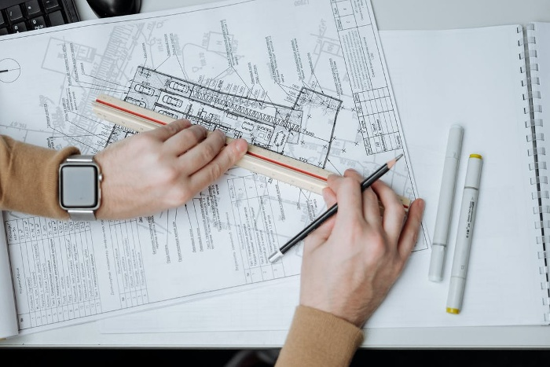

Advantages of Using Construction Estimating Services Melbourne
When beginning a new project, it can be easy to be overwhelmed by the amount of things to think about, from determining what equipment you will need, to figuring out how you will fund the project. Every construction project has costs that need to be planned and accounted for, and using construction estimating services Melbourne can help ensure that your project is on budget and on time.
Hiring a construction estimating service
A construction company will help you earn more business and win more projects. They may also reduce your material costs, which will allow you to be more competitive in the marketplace. A contractor that can reduce their value will be more successful.
A good estimator should have:
- Analytical skills
- Good knowledge of construction procedures, and
- Effective communication abilities
It is also essential for the estimator to work professionally with other construction specialists as required to create an informed estimate.They'll be required to decide if the project design contains vital factors of quality and accuracy. They'll be required to be aware of deadlines, square footage, and materials, so they can provide accurate estimates.
A construction estimating service can provide reasonable and accurate cost estimates. It is essential for a contractor to receive the greatest bid, but an accurate estimate can help a buyer steer clear of the most common pitfalls.

Benefits of Construction Estimating Services
Companies all across the country offer construction estimating options. These services provide budget cost estimates, which are used for construction projects. They're crucial for construction companies, as they determine what materials and tools are needed. These services can help you save time and money. Companies all across the country offer construction estimating options. These services provide budget cost estimates, which are used for construction projects. They're crucial for construction companies, as they determine what materials and tools are needed. These services can help you save time and money.
Construction estimating services can assist you in developing a budget for a construction project. These specialists can develop a shopping list for the project, and calculate the costs associated with each item. These specialists also consider the weight of each one of the materials, which is vital for their work.
Construction estimating services, written in a bid or cost estimate, can help you secure the best deal possible on your development project. With an accurate bid or cost estimate, you can select the best contractor for your specific project. And if you need a more detailed estimate, you can use an estimate calculator. No matter the type of development project you're working on, they'll have the ability to offer you a cost estimate.
Another Benefit of Hiring a Professional Construction Estimating Service
As a result, you will be able to focus on growing your business while your construction project is getting completed. The service provider will provide you with accurate estimates and will monitor market fluctuations.When you're choosing a construction estimating service, you can devote your time to coming up with more profitable strategies for your customers while getting your estimate.
Hiring an expert construction estimating service allows you to tackle multiple tasks at one time and ultimately ensures a healthier profit margin. This will provide you with more confidence in your budget and your ability to execute the budget.
A professional estimator can help you correctly and precisely estimate the cost of your project. The estimator will also help you manage your budget and make sure that it's aligned with your budget vision. By working with a pro, you will not only save time and money, but you'll also be a significantly stronger competitor on the market.So, if you're thinking of hiring a construction contracting service, you should think about the benefits. A professional construction estimating service will help you study your risks and make informed decisions about your construction projects.
Conclusion
Construction estimating services are used to facilitate projects, which helps save time, money, and resources. The benefits of construction estimating services also include the ability to schedule work, manage budgets, and plan manpower requirements. Construction estimating services are also useful in risk mitigation as it prepares for accidents, damages, and delays.